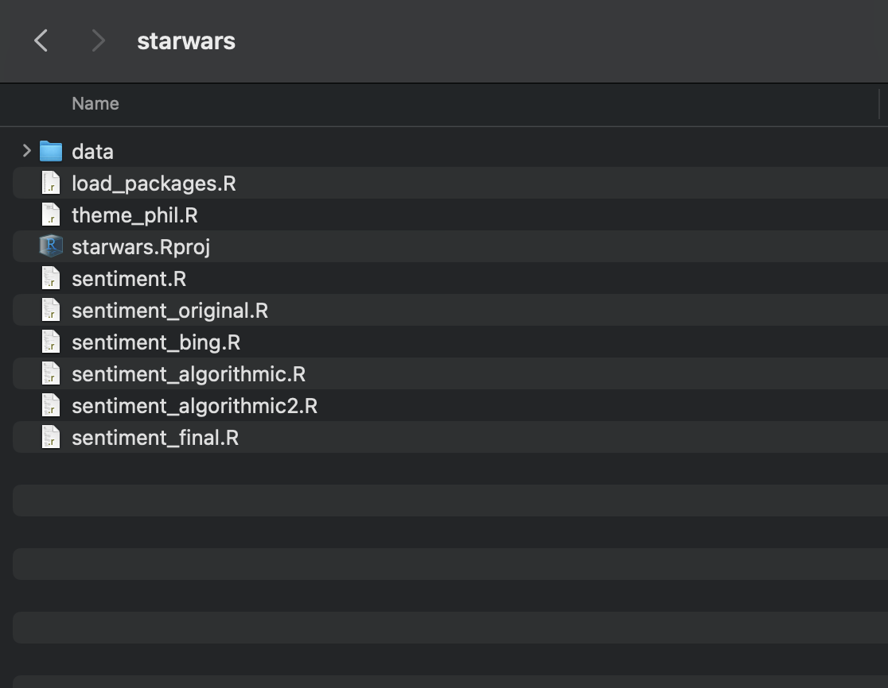
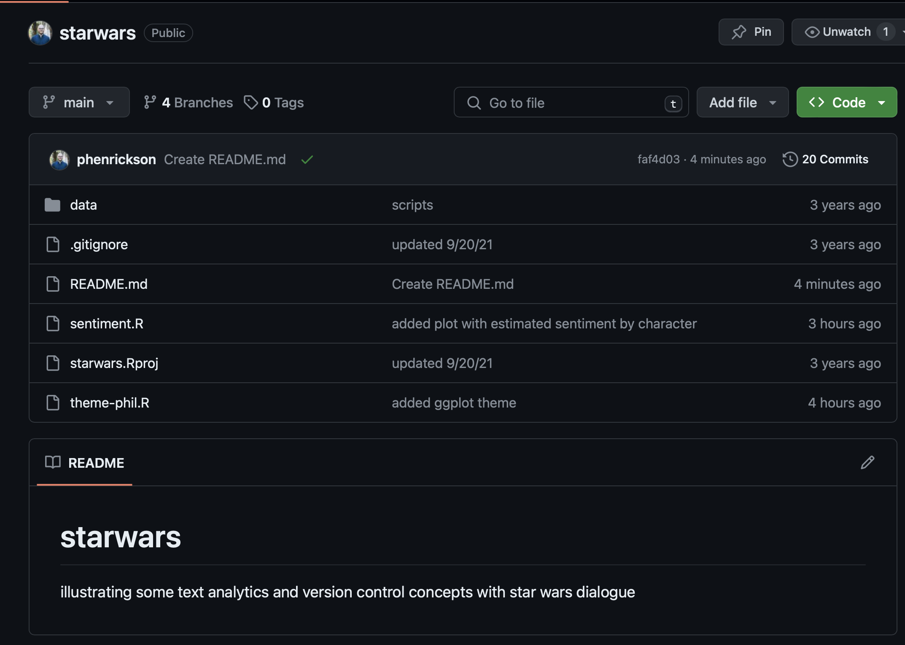
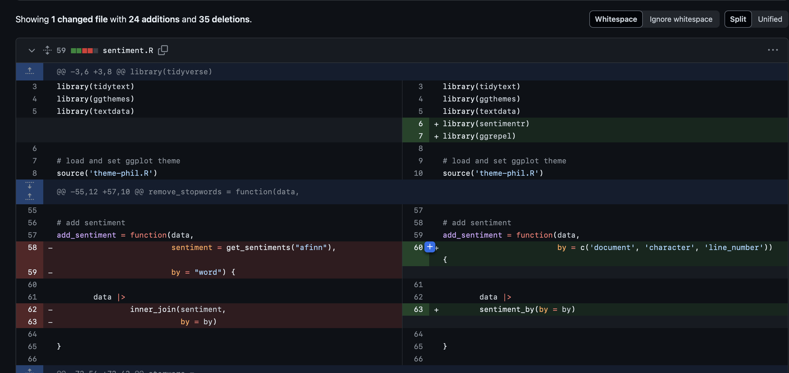

```{r}
#| eval: false
clean_starwars = function(data) {
data |>
mutate(episode = case_when(document == 'a new hope' ~ 'iv',
document == 'the empire strikes back' ~ 'v',
document == 'return of the jedi' ~ 'vi')) |>
mutate(character = case_when(character == 'BERU' ~ 'AUNT BERU',
character == 'LURE' ~ 'LUKE',
TRUE ~ character)) |>
select(episode, everything())
}
# load starwars
starwars = read_csv(here::here('materials', 'data', 'starwars_text.csv')) |>
clean_starwars()
# show first few lines of a new hope
starwars |>
head(10) |>
select(episode, document, character, dialogue) |>
gt::gt() |>
gt::as_raw_html()
```Getting to Know
Git and GitHub
The Problem
Consider the following situations:
We’ve been working on a project for ages. We have a core, legacy script that has gone through about 30 different iterations with edits from dozens of people as the project has changed over the years. We need to audit how that script has changed over time.
We made a change to one of the core functions of our project and everything seemed to be great. But two weeks later we discovered a change to a helper function broke something in our monthly report. We’re now trying to figure out what we changed and how to patch it.
Someone recently mentioned that lightgbm + linear trees offers a really nice improvement in both training time and performance over XGBoost. They want to test it in our project, and then evaluate whether this should become the new model.
Version Control
For each one of these scenarios, we intuitively want something resembling version control. We want to tinker with making a change, but we don’t want that change to overwrite or break our existing code.
People implement their own approaches to version control all the time.
We make a copy of the original, then create a new copy that we begin to edit and work on without breaking the original source.
We’ve all probably come up with some version of crazy, half-baked version syntax to control the various versions of projects/files.
So why Git?
If you’re like me, at some point you thought to yourself, maybe I could be that guy who uses Git and talks about commits and pull requests and really knows what he’s doing with dev vs prod environments rather than just putting _dev and _test at the end of important files.
I’m going to improve.
I’m going to be more than I’ve ever been.
I’m going to use Git.
The Reality
And about thirty minutes later it was so unclear how any of this would help you that you just punted and decided to keep working as you always have, warts and all, because Git clearly comes from The Bad Place.
But!
The Reality
So many of the frustrations with writing code, making changes, and storing the history of your work go away once we implement version control.
There’s a reason Git is used everywhere. It is the life jacket in a sea of stashing files everywhere with poor naming conventions and no lineage or history.
You have to learn how to use Git.
It’s going to be painful.
But it’s worth it.
Why should we commit to this?
Why would a statistician use a version control system, such as Git? And what is the point of hosting your work online, e.g., on GitHub? Could the gains possibly justify the inevitable pain? I say yes, with the zeal of the converted.
Doing your work becomes tightly integrated with organizing, recording, and disseminating it. It’s not a separate, burdensome task you are tempted to neglect.
Collaboration is much more structured, with powerful tools for asynchronous work and managing versions.
By using common mechanics across work modes (research, teaching, analysis), you achieve basic competence quickly and avoid the demoralizing forget-relearn cycle.
Despite this zeal, she does make an important note:
Now the bad news: Git was built neither for the exact usage described here, nor for broad usability. You will undoubtedly notice this, so it’s best to know in advance.
Git was not designed for data science projects. This will at times create slightly wonky implementations and workarounds that feel frustrating.
Things get more complicated once we start trying to version control data/models, which is a whole topic in and of itself.
With and Without Git:
An Example
Was Luke Really That Whiny?
Suppose we have a project we are working on. We are interested in running text/sentiment analysis on the scripts of the original Star Wars trilogy.
We want to know things such as, who are the most positive/negative characters in A New Hope? A lot of people have claimed Luke was really whiny; is that the case?
So, naturally, we go and get the script from A New Hope in text form.
| episode | document | character | dialogue |
|---|---|---|---|
| iv | a new hope | THREEPIO | Did you hear that? They've shut down the main reactor. We'll be destroyed for sure. This is madness! |
| iv | a new hope | THREEPIO | We're doomed! |
| iv | a new hope | THREEPIO | There'll be no escape for the Princess this time. |
| iv | a new hope | THREEPIO | What's that? |
| iv | a new hope | THREEPIO | I should have known better than to trust the logic of a half-sized thermocapsulary dehousing assister... |
| iv | a new hope | LUKE | Hurry up! Come with me! What are you waiting for?! Get in gear! |
| iv | a new hope | THREEPIO | Artoo! Artoo-Detoo, where are you? |
| iv | a new hope | THREEPIO | At last! Where have you been? |
| iv | a new hope | THREEPIO | They're heading in this direction. What are we going to do? We'll be sent to the spice mines of Kessel or smashed into who knows what! |
| iv | a new hope | THREEPIO | Wait a minute, where are you going? |
| iv | a new hope | IMPERIAL OFFICER | The Death Star plans are not in the main computer. |
| iv | a new hope | VADER | Where are those transmissions you intercepted? |
| iv | a new hope | REBEL OFFICER | We intercepted no transmissions. Aaah... This is a consular ship. Were on a diplomatic mission. |
| iv | a new hope | VADER | If this is a consular ship... where is the Ambassador? |
| iv | a new hope | VADER | Commander, tear this ship apart until you've found those plans and bring me the Ambassador. I want her alive! |
We tokenize the data, remove stopwords, and then calculate sentiment in a pretty simple way.
```{r}
#| eval: false
#| message: false
#| warning: false
#| label: starwars-text
data("stop_words")
starwars_tokenized =
starwars |>
unnest_tokens(word, dialogue) |>
anti_join(stop_words, by = "word")
starwars_tokenized |>
inner_join(tidytext::get_sentiments("afinn"), by = "word") |>
head(15) |>
gt::gt() |>
gt::as_raw_html()
```| episode | document | line_number | character | word | value |
|---|---|---|---|---|---|
| iv | a new hope | 1 | THREEPIO | destroyed | -3 |
| iv | a new hope | 1 | THREEPIO | madness | -3 |
| iv | a new hope | 2 | THREEPIO | doomed | -2 |
| iv | a new hope | 3 | THREEPIO | escape | -1 |
| iv | a new hope | 5 | THREEPIO | trust | 1 |
| iv | a new hope | 11 | IMPERIAL OFFICER | death | -2 |
| iv | a new hope | 15 | VADER | alive | 1 |
| iv | a new hope | 17 | TROOPER | prisoner | -2 |
| iv | a new hope | 18 | THREEPIO | restricted | -2 |
| iv | a new hope | 19 | THREEPIO | mindless | -2 |
We then calculate sentiment across all characters to get a sense of how negative Luke really was.

sentiment analysis via tokenization and afinn
Apparently, pretty negative. Let’s look at some dialogue.
| character | line_number | value | dialogue |
|---|---|---|---|
| a new hope | |||
| LUKE | 966 | -6 | You worry about those fighters! I'll worry about the tower! |
| LUKE | 967 | -4 | Artoo... that, that stabilizer's broken loose again! See if you can't lock it down! |
| LUKE | 117 | -3 | This R2 unit has a bad motivator. Look! |
| LUKE | 220 | -3 | Wait, there's something dead ahead on the scanner. It looks like our droid... hit the accelerator. |
| LUKE | 228 | -3 | Sand People! Or worse! Come on, let's have a look. Come on. |
| LUKE | 238 | -3 | I think my uncle knew him. He said he was dead. |
| LUKE | 263 | -3 | How did my father die? |
| LUKE | 274 | -3 | I can't get involved! I've got work to do! It's not that I like the Empire. I hate it! But there's nothing I can do about it right now. It's such a long way from here. |
| LUKE | 320 | -3 | Go on, go on. I can't understand how we got by those troopers. I thought we were dead. |
| LUKE | 354 | -3 | You bet I could. I'm not such a bad pilot myself! We don't have to sit here and listen... |
| LUKE | 496 | -3 | Then he must have gotten lost, been part of a convoy or something... |
| LUKE | 566 | -3 | But he didn't know she was here. Look, will you just find a way back into the detention block? |
| LUKE | 570 | -3 | But they're going to kill her! |
| LUKE | 597 | -3 | Prisoner transfer from Block one-one-three-eight. |
| LUKE | 729 | -3 | What good will it do us if he gets himself killed? Come on! |
| LUKE | 886 | -3 | I'm hit, but not bad. |
| LUKE | 986 | -3 | I've lost Artoo! |
| LUKE | 38 | -2 | But there was a lot of firing earlier... |
| LUKE | 80 | -2 | And I'm stuck here... |
| LUKE | 84 | -2 | I know, but he's got enough vaporators going to make the place pay off. He needs me for just one more season. I can't leave him now. |
This is interesting enough, so we save the script, that produces this analysis, called sentiment.R.
Then we think, maybe we should see what happens if we calculate sentiment in a different way. Were Han and Ben really that negative? Even simple methods of sentiment can vary quite a bit depending on which lexicon you use, so we should try a couple.
But we might want to stick our first approach, so we decide to write a whole new section to our code, or just add a new script entirely, sentiment_bing.R.
sentiment analysis via tokenization and bing
We get a pretty similar result, so we’re feeling okay about ourselves and less okay about Luke.
But then someone says, we shouldn’t rely on such crude methods for calculating sentiment. We should use a more sophisticated method, via the sentimentr package.
So we want to edit our original sentiment.R script and switch over to using this new package. This one forces us to add some new packages, and rewrite some of our visualization scripts to get the same type of visualization, so we create a new script, sentiment_algorithm.R.
We’re also slightly worried that we’ve forgotten what we originally started with, so we’re gonna make a sentiment_original.R file. Just so we have it.
But anyway, we’ll edit our code for the third time and run it again.
sentiment analysis via sentimentr
This gives us very different results, so we really need to dive into the data bit here to figure out what’s going on.
We decide to compare how our original method (left) calculates sentiment for the entire script of A New Hope compared to sentimentr (right). That means we need to go add a visualization to each of our original scripts, so we go edit sentiment_original.R and sentiment_algorithm.R.


These are very different, so now we go down a rabbit hole of digging into what we’re getting out of the sentimentr package. We take a look at Luke’s dialogue line by line.

We realize that we shouldn’t be calculating sentiment at the line-level and then aggregating, because short positive statements potentially end up getting as much weight as longer complaints.
With this method we really should look at the estimated sentiment across a character’s entire dialogue to get a sense of their tone.
So we implement a change, shifting away from aggregation by summing to using the average sentiment over all lines. We then calculate the estimated sentiment across all characters.
estimated sentiment by character via sentimentr
Is Luke whiny? Well, it depends. This is the type of hard hitting analysis that I deliver for my clients.
What we are left with after a fairly simple analyses is a messy, entangled set of files with absolutely no sense of history or organization.

This is a mess for us to figure out, imagine if someone else is supposed to come along and work with this code. Where do they start?
How would this look if we were using Git?
The end result is a bit cleaner. We basically just have the one script to worry about. If we’re really curious about what we need to do, we check the README (yes, you are expected to read these).

The end result of our work is the current state of the project, which we store in a repository.
If we want to see the work that we did up to this point, all we have to do is look at the history of that script and the various changes we made to in in the form of commits.

Visualized as a timeline from left to right, the history of our work might look something like this. Each commit is a snapshot of our files at a specific point in time.
gitGraph
commit id: "initial"
commit id: "afinn"
commit id: "bing"
commit id: "sentimentr"
The differences between these commits allow us to easily view how our script changed as we worked on it.
And, most importantly, we can view the history of our work in the approriate way…
Why Go Through This Exercise
Because I wanted to make Star Wars jokes.
Because git is tremendously helpful even just for one individual.
It removes the mental baggage of worrying about editing your code and remembering what you did. It allows you to make changes, track the history of your project, and document everything you did along the way.
Where it starts to get even more helpful is for enabling collaboration within a team.
With and Without Git:
Predictive Modeling
Git for Data Science
Suppose we were working on a predictive modeling project instead of looking at Star Wars scripts.
Think about the pieces involved in a typical predictive modeling project.
- Loading data
- Cleaning data
- Splitting data
- Feature engineering
- Model specification
- Tuning parameters
- Model evaluation
- Model selection
- Model deployment
We typically don’t build all of this at once and have everything finalized from the get go.
flowchart LR raw[Raw Data] --> clean[Clean Data] clean --> train[Training Set] clean --> valid[Validation Set] train --> preprocessor(Preprocessor) preprocessor --> resamples[Resamples] resamples --> model(Model Spec) model --> features(Features) features --> tuning(Tuning) tuning --> valid preprocessor --> valid valid --> evaluation[Model Evaluation] train --> final(Model) valid --> final
We build incrementally, typically testing and experimenting with different pieces along the way.
flowchart LR raw[Raw Data] --> clean[Clean Data] clean --> train[Training Set] clean --> valid[Validation Set] train --> model(Baseline Model)
We might start out the project by training a simple baseline model.
Then maybe we decide to add in some feature engineering and tune a ridge regression over 25 bootstraps, which requires normalization and imputation.
flowchart LR raw[Raw Data] --> clean[Clean Data] clean --> train[Training Set] clean --> valid[Validation Set] train --> preprocessor(Preprocessor) preprocessor --> resamples[Bootstraps] resamples --> model(glmnet) model --> features(Impute + Normalize) features --> tuning(Tuning) tuning --> valid preprocessor --> valid valid --> evaluation[Model Evaluation] train --> final(Model) valid --> final
Then maybe we decide to try out a more flexible model like lightgbm with minimal feature engineering.
flowchart LR raw[Raw Data] --> clean[Clean Data] clean --> train[Training Set] clean --> valid[Validation Set] train --> preprocessor(Preprocessor) preprocessor --> resamples[Cross validation] resamples --> model(lightgbm) model --> features(Minimal) features --> tuning(Tuning) tuning --> valid preprocessor --> valid valid --> evaluation[Model Evaluation] train --> final(Model) valid --> final
And so on, and so on.
Git for Data Science
In each of these cases, we have code that we have executed and results associated with that code.
As before, we could try to store a bunch of scripts and track all of the results in different folders.
Or, we could use Git to track our code and the results of our experiments.
This can start to get complicated.
gitGraph
commit
commit
branch data
checkout data
commit
commit
branch stable/model
checkout stable/model
branch dev/model
checkout dev/model
commit
branch dev/glmnet
checkout dev/glmnet
commit
checkout dev/model
merge dev/glmnet
branch dev/xgboost
checkout dev/xgboost
commit
checkout dev/model
merge dev/xgboost
commit
checkout stable/model
merge dev/model
checkout main
merge stable/model tag: "v1"
We’ll start with the basics.
What We Need to Know About Git
So, what the heck is Git?
As with many great things in life, Git began with a bit of creative destruction and fiery controversy.
The Linux kernel is an open source software project of fairly large scope. During the early years of the Linux kernel maintenance (1991–2002), changes to the software were passed around as patches and archived files. In 2002, the Linux kernel project began using a proprietary [Distributed Version Control System] called BitKeeper.
In 2005, the relationship between the community that developed the Linux kernel and the commercial company that developed BitKeeper broke down, and the tool’s free-of-charge status was revoked. This prompted the Linux development community (and in particular Linus Torvalds, the creator of Linux) to develop their own tool based on some of the lessons they learned while using BitKeeper.
https://git-scm.com/book/en/v2/Getting-Started-A-Short-History-of-Git
Git
Git is a version control system.
Git was originally developed for the purpose of helping developers work in parallel on their software projects.
Git manages and tracks a set of files - referred to as a repository - in a highly structured way.
Git
Though originally intended for software development, Git is now used by data scientists in a variety of different ways to track the odds and ends that go into data science projects.
GitHub
GitHub is a hosting service that stores your Git-based projects in a remote location.
Storing your code on GitHub allows you to share/sync your work with others (as well as have a safe back up for when you inevitably mess up your local repository).
We’ll focus on GitHub (because it’s what I use, but there are other options out there as well).
GitHub has additional features for managing projects and automating aspects of a project, we’ll touch on that later.
Git Basics
Git Basics
- Repository: a directory in which file history is preserved
Git Basics
- Repository: a directory in which file history is preserved
- Clone: downloading an existing repository
Git Basics
- Repository: a directory in which file history is preserved
- Clone: downloading an existing repository
- Local: “on your personal machine”
Git Basics
- Repository: a directory in which file history is preserved
- Clone: downloading an existing repository
- Local: “on your personal machine”
- Remote: “on the official server”
Git Basics
- Repository: a directory in which file history is preserved
- Clone: downloading an existing repository
- Local: “on your personal machine”
- Remote: “on the official server”
- Branch: A version of the directory
Git Basics
- Repository: a directory in which file history is preserved
- Clone: downloading an existing repository
- Local: “on your personal machine”
- Remote: “on the official server”
- Branch: A version of the directory
- Commit: A change made to a version of the directory
Git Basics
- Repository: a directory in which file history is preserved
- Clone: downloading an existing repository
- Local: “on your personal machine”
- Remote: “on the official server”
- Branch: A version of the directory
- Commit: A change made to a version of the directory
- Push: Uploads your work to the ‘official’ remote server
Git Basics
- Repository: a directory in which file history is preserved
- Clone: downloading an existing repository
- Local: “on your personal machine”
- Remote: “on the official server”
- Branch: A version of the directory
- Commit: A change made to a version of the directory
- Push: Uploads your work to the ‘official’ remote server
- Fetch/Pull: Checks for available updates on a remote
Git Basics
- Repository: a directory in which file history is preserved
- Clone: downloading an existing repository
- Local: “on your personal machine”
- Remote: “on the official server”
- Branch: A version of the directory
- Commit: A change made to a version of the directory
- Push: Uploads your work to the ‘official’ remote server
- Fetch/Pull: Checks for available updates on a remote
- Switch/Checkout: Switches your local copy to a version of the directory
Git Basics
- Repository: a directory in which file history is preserved
- Clone: downloading an existing repository
- Local: “on your personal machine”
- Remote: “on the official server”
- Branch: A version of the directory
- Commit: A change made to a version of the directory
- Push: Uploads your work to the ‘official’ remote server
- Fetch/Pull: Checks for available updates on a remote
- Switch/Checkout: Switches your local copy to a version of the directory
- Pull Request: A request to merge one branch into another
Oh My Git
Git Basics - Demo
- Repo organization for https:://github.com/ds-workshop/starwars
- Viewing history
- Making a change (Let’s examine Vader insteaed of Luke)
- Creating a branch
- Adding a change
- Pushing the change
- Viewing the change
gitGraph
commit id: "Initial commit"
commit
branch dev
checkout dev
commit
commit
checkout main
merge dev
commit
commit
Creating a New Repo
Creating a New Repo
Git is highly structured way of managing a set of files, called a repository.
We’ll often work by cloning an already established repository in order introduce changes, meaning that we are inheriting a set of files. . . .
But it’s really worth knowing how to create a repository from scratch.
Creating a New Repo
We want to create a new project called git-started.
We want to create a new GitHub repository.
We want to create a new RStudio project.
We want to connect RStudio to GitHub so our project is connected with our repository.
We can do this in a couple of different ways, starting in either GitHub or RStudio.
GitHub -> RStudio
- Go to GitHub.com and sign in with your account
- Click on Repositories.
- Click on New repository.
GitHub -> RStudio
- Go to GitHub.com and sign in with your account
- Click on Repositories.
- Click on New repository.
- Name the repository
- Initialize the repository with a README
GitHub -> RStudio
- Go to GitHub.com and sign in with your account
- Click on Repositories.
- Click on New repository.
- Name the repository
- Initialize the repository with a README
- Click Create repository.
GitHub -> RStudio
- Go to GitHub.com and sign in with your account
- Click on Repositories.
- Click on New repository.
- Name the repository
- Initialize the repository with a README
- Click Create repository.
This creates a new repository on GitHub, but we still need to connect it to RStudio. To do this, we need to clone this repo from RStudio.
GitHub -> RStudio
- Go to GitHub.com and sign in with your account
- Click on Repositories.
- Click on New repository.
- Name the repository
- Initialize the repository with a README
- Click Create repository.
- Open a New Project in RStudio
- Create from Version Control
GitHub -> RStudio
- Go to GitHub.com and sign in with your account
- Click on Repositories.
- Click on New repository.
- Name the repository
- Initialize the repository with a README
- Click Create repository.
- Open a New Project on RStudio
- Create from Version Control
- Paste in your Repository URL from GitHub
GitHub -> RStudio
- Go to GitHub.com and sign in with your account
- Click on Repositories.
- Click on New repository.
- Name the repository
- Initialize the repository with a README
- Click Create repository.
- Open a New Project on RStudio
- Create from Version Control
- Set Repository URL to link of GitHub repo
- Set name and location of project
- Create project
GitHub -> RStudio
These steps inside of RStudio can also be taken care of by using the usethis package, but I tend to just go through the process each time.

GitHub -> RStudio
These steps inside of RStudio can also be taken care of by using the usethis package, but I tend to just go through the process each time.
Under the hood, this last bit is essentially just:
git clone “https://github.com/YOU/YOUR_REPO.git”
Your Turn
- Create a new Git repository on GitHub, git-started
- Add a description to the project (whatever you would like)
- Initialize this repository with a README
- Create a new RStudio project
- Connect this RStudio project to your GitHub repo
- Add a new script, or make a change to the README; what happens?
10:00
RStudio -> Github
Creating a new project with GitHub first then cloning with RStudio is what I would tend to recommend.
It’s the same process as cloning repositories from other people, plus it takes care of some pieces behind the scenes.
You can however also start by first creating an RStudio project, then initialize a GitHub repository second. This process can be useful to know if you want to set up a GitHub repo for an existing project.
RStudio -> Github
- Create a new RStudio project.
- Check ‘Create a git repository’
RStudio -> Github
- Create a new RStudio project
- Check ‘Create a git repository’
- usethisthis::use_git() to initialize a local repository, add and commit your initial files
- usethis::use_github() to create a repository on GitHub and connect your R project
RStudio -> Github
Commits
We now have a repository, but we want Git to track our files.
I created my git-started repo from RStudio -> GitHub, which means I didn’t initialize a README. I want to add a README to the repo.
I create the file in my working directory, which causes it to appear in my Git tab in RStudio.
Checking the file adds it to staging.
We can then commit the file.
Three States of (Tracked) Files
Files in your repository can generally take on one of three states: . . .
Modified means that you made changes to a file but have not committed those changes to your repository yet.
Staged means that you have marked a modified file in its current version to go into your next commit.
Committed means that the snapshot is safely stored in your local repository
If you haven’t yet added a file but it’s in your working directory, it will appear as “untracked”. It will only be added to your repository if you add it, by first staging it and then committing it.
Let’s go back to the first image. I don’t know how important it is to dwell on this, but if we want to get an understanding of what’s happening under the hood with Git, we can get a sense of how Git works.
Three Sections of Git
This last image highlights the three main sections of a Git project - what you’re going through painstaking effort to set up.
- The Working Directory (Tree) is a single checkout of one version of a project
- The Staging Area refers to a file (index) that lives in your .git directory that tracks information about what will go into your next commit
- The Git Directory is where Git stores the metadata and object database for your project
If you open up a the folder where you created git-started, you’ll notice that there’s a hidden .git folder.
If you open up a the folder where you created git-started, you’ll notice that there’s a hidden .git folder.
Yeah, don’t mess with that; that’s basically what you’re configuring when you initialize a repo, add/commit files, and sync with a remote.
Cloning a Repo
Cloning someone else’s repo from GitHub operates in much the same way as before.
- Copy the GitHub Repository URL
- Open a New Project on RStudio
- Create from Version Control
- Paste Repository URL from GitHub repo
- Set name and location of project
- Create project
Your Turn
- Create a new R project
- Clone the repo at https:://github.com/ds-workshop/starwars
- Run
README.qmd` (notice: what packages do you need to install?)
10:00
Branches and Pull Requests
Branches and Pull Requests
A typical commit history for one branch might look something like this. We have a series of commits that tracks the history of the project from left to right.
gitGraph
commit
commit
commit
commit type:HIGHLIGHT
We could just keep working out of one branch, tracking the history of the project via our commits.
gitGraph
commit
commit
commit
commit
commit
commit
commit type:HIGHLIGHT
This has some appeal because of its simplicity; if we ever want to see our previous work, we just flip back through our history of commits.
How often should we commit our code?
Using a Git commit is like using anchors and other protection when climbing. If you’re crossing a dangerous rock face you want to make sure you’ve used protection to catch you if you fall. Commits play a similar role: if you make a mistake, you can’t fall past the previous commit.
Coding without commits is like free-climbing: you can travel much faster in the short-term, but in the long-term the chances of catastrophic failure are high! Like rock climbing protection, you want to be judicious in your use of commits.
Committing too frequently will slow your progress; use more commits when you’re in uncertain or dangerous territory. Commits are also helpful to others, because they show your journey, not just the destination.
https://r-pkgs.org/software-development-practices.html#git-commit
Suppose you’re at a point in your project where you’re not certain about the next direction you want to take. You could keep making a series of small commits and then revert all the way back to where you were originally.
gitGraph
commit
commit
commit
commit type:HIGHLIGHT
commit
commit
commit
But a better approach is to use branches. Branching amounts to creating a detour from the main stream of commits; it allows you to work without any fear of disrupting the work in main.
gitGraph
commit
commit
commit
commit
branch dev
checkout dev
commit
commit
commit
Once you’ve completed your work, you can then choose to merge it back into main; this can be done via a pull request on GitHub.
gitGraph
commit
commit
commit
commit
branch dev
checkout dev
commit
commit
commit
checkout main
merge dev
Or, you can just stop working on the branch and go back to working on main, letting the branch become stale.
gitGraph
commit
commit
commit
commit
branch dev
checkout dev
commit
commit
commit
checkout main
commit
commit
Branching allows teams of developers to do their work on separate branches without overwriting or getting in the way of each other’s work.
Typically, it is common to block direct commits to main and only allow new commits to main via pull requests.
This pattern requires creating new branches, such as dev, where developers commit their work. dev is then merged back into main pending an approval process.
gitGraph
commit
branch dev
checkout dev
commit
commit
commit
commit
checkout main
merge dev tag: "draft"
With larger development teams, it’s more common to see branching strategies involving a number of common branchdes main, dev, feature, hotfix.
main: releases, most controlled branch
dev: where completed work is staged for release
feature: in-progress work; mostly a sandbox for individual developers
gitGraph
commit
commit
branch dev
checkout dev
commit
commit
commit
branch feature
commit
commit
checkout dev
merge feature
commit
checkout main
merge dev tag: "release 1"
Guidelines
- Delete branches when merging
- Disallow direct commits to main
- Minimize direct commits to develop
- Require reviewer approval on pull requests into main
- Limit PR approval to project leads
- Use tags to mark milestones/releases
gitGraph
commit
branch hotfix
checkout hotfix
commit
branch develop
checkout develop
commit tag:"draft"
branch featureB
checkout featureB
commit type:HIGHLIGHT
checkout main
checkout hotfix
commit type:NORMAL
checkout develop
commit
checkout featureB
commit
checkout main
merge hotfix
checkout featureB
commit
checkout develop
branch featureA
commit
checkout develop
merge hotfix
checkout featureA
commit
checkout featureB
commit
checkout develop
merge featureA
checkout main
merge develop
How does data science differ from traditional software development?
gitGraph
commit
commit
branch data
checkout data
commit
commit
branch stable/model
checkout stable/model
branch dev/model
checkout dev/model
commit
branch dev/glmnet
checkout dev/glmnet
commit
checkout dev/model
merge dev/glmnet
branch dev/xgboost
checkout dev/xgboost
commit
checkout dev/model
merge dev/xgboost
commit
checkout stable/model
merge dev/model
checkout main
merge stable/model tag: "v1"
Your Turn
- Open the starwars project you have previously cloned
- Create a new branch called feature or dev
- Make a change to
README.qmd, or add a new script - Commit those changes to your branch
- Create a pull request for your branch into main
10:00
Cloning vs Forking
Okay so we can see what you all did in your own separate repos, but there’s a problem. Let’s say I wanted to merge a change that you made into the original Star Wars repo - right now, there’s no way to do that.
When you create a Git repo locally, you eventually need to connect that repo to a remote location.

You typically create a copy of that repo at your remote location (GitHub), which is owned by you and you have full access to push/pull/merge to your heart’s content.
The remote is typically known as origin.

Cloning someone else’s repo creates a local copy of their repo, where the origin is owned by someone else.
In this case, you can pull and execute code, but you have no way of pushing changes to it; the owner of that repo has configured origin to be read-only for others.

So what the heck? If Git and GitHub are supposed to be collaborative, how do we configure things so that we can push and pull and work within the same repository?
One option is to just provide permissions to origin by adding others as collaborators. The source repo is owned by someone else, or an organization, but you have permissions to make changes.

The other option is to use forking, where you fork the original repo to create a copy for yourself that becomes your remote origin, where you have full permissions to read and write.
The original source repo is typically referred to as upstream - you can pull changes from it but you can’t push directly to it.
If you want your changes to make it upstream, you push your code to your origin, then create a pull request for the repo owner to consider merging in your changes.

Fork-and-Clone - Demo
- Fork-and-clone a repo (https://github.com/jennybc/bingo)
- Configure the source stream as the upstream remote
- Configure local main to track upstream/main
- Make a change (add annoying data science questions)
- Commit a change (push to origin)
- Submit a pull request
Forking and cloning directly from Github entails a couple of additional steps to ensure that you are tracking the original source repo.

The first step is to add an additional remote that is pointed to the source repo. The original (source) repo in this case is typically referred to as upstream. This can be done by running:
git remote add upstream https://github.com/OWNER/REPO.git
After adding the upstream remote, you will then want to look for any changes that have happened to the source
git fetch upstream
You’ll probably want to set your local main branch to track the upstream/main branch, so you can easily see if any changes have occurred in the source repo. This is optional, but in a fork-and-clone situation it’s the standard.
git branch –set-upstream-to upstream/main
Alternatively, you can always use the helpful functions from usethis, which will take care of the upstream tracking on one go. You simply need to open a new RStudio session (note: not in a project) and run the following:
This will fork and clone the repository at repo_spec and create a local RStudio project in destdir.
Your Turn
- Fork and clone https://github.com/ds-workshop/board_games
- Run usethis::git_remotes() in R or use git remote -v in the terminal; what do you see?
- Create a new branch to begin your development
- Open analysis.qmd
- Run analysis.qmd (something is going to be a problem here here!)
- Answer the questions
- Commit your answers
- Push your answers
- Create a pull request for your branch into ds-workshop/feature
15:00
We hit something of a snag with installing the requisite packages for that one, eh? We’ll talk about that shortly.
But next, let’s review everyone’s work and complete a pull request. We’ll then work off one of these branches, and proceed to add some new pieces.
Your Turn
- Checkout main
- Pull upstream/main to ensure you are caught up with new changes
- Examine the new questions in analysis.qmd
- Create a new branch for development
- Commit your answers
- Push your answers
- Create a pull request for your branch into ds-workshop/main
15:00